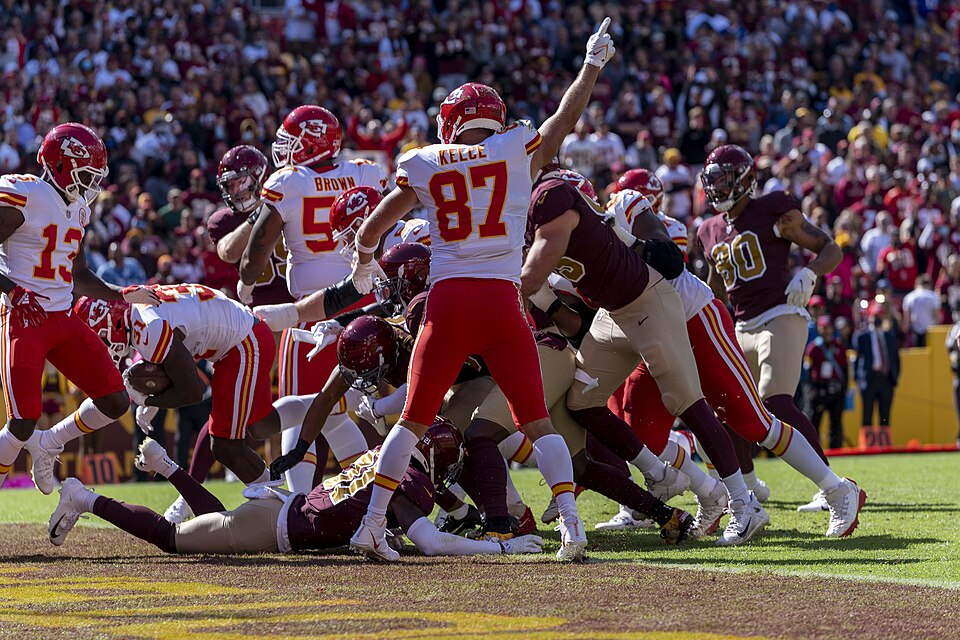

Recap
4 pieces
Ninety-Nine Points On The Bench
CaptainClark started a receiver who had been ruled out before kickoff and left the biggest bench of the season behind him.
Recap
The Median Did Its Job This Time
Last week the second result agreed with the first one ten times out of ten. This week it disagreed four times, and every one of them mattered.
Recap
Nobody Went 1-1
The median matchup exists to tell the unlucky apart from the bad. In its first week of 2026 it told them apart from nobody.

One Slot, Four Results
ProfessorMerlyn started a tight end who scored nothing and benched one who scored 9.6. In a league with a median matchup that decision moved four results, not one.